Rust
is for Blockchain
What up?
That guy →
Brian Anderson
@brson
brson.github.io

A domain for Rust
Why Rust for blockchain?
Why blockchain for Rust??



Badass Rust projects
(from blockchain companies)
The VMs of (blockchain) Rust
Little / big communities
How you can help
Rust
is for Blockchain
https://github.com
/brson/
rust-is-for-blockchain
/brson/
rust-is-for-blockchain